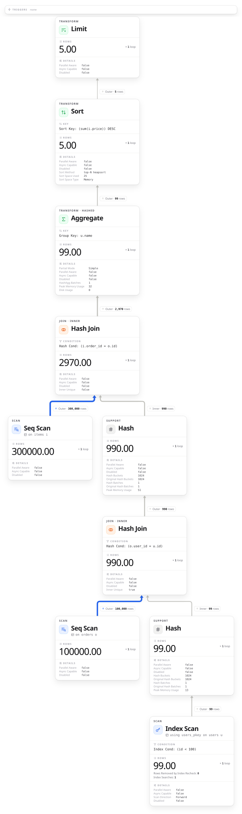
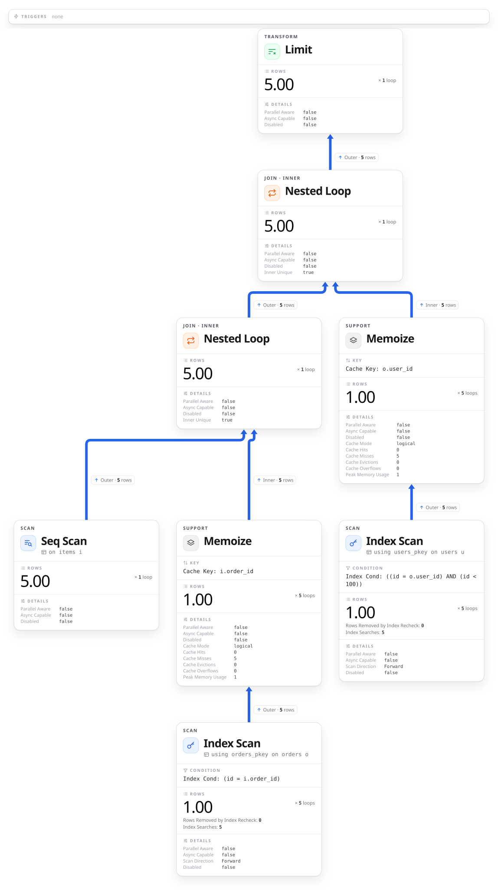

KDOC 658: 集計や並べ替えの後ろにある LIMIT は読む行を減らさない
この文書のステータス
- 作成
- 2026-10-13 貴島
- レビュー
- 2026-10-13 貴島
概要
集計や並べ替えの後ろにある LIMIT は、下の処理が全部の行を読み終えるまで効かないので、読む行を減らさないのを確かめる。
ユーザー、注文、明細を結合し、ユーザーごとに金額を合計して、上位5件を取る。比べるため、集計と並べ替えを外して 5 件取る問い合わせも流す。
SET max_parallel_workers_per_gather = 0;
CREATE TABLE users (id int PRIMARY KEY, name text);
CREATE TABLE orders (id int PRIMARY KEY, user_id int);
CREATE TABLE items (order_id int, price int);
INSERT INTO users
SELECT i, 'user' || i FROM generate_series(1, 10000) i;
INSERT INTO orders
SELECT i, i % 10000 + 1 FROM generate_series(1, 100000) i;
INSERT INTO items
SELECT i % 100000 + 1, i % 1000 FROM generate_series(1, 300000) i;
ANALYZE users;
ANALYZE orders;
ANALYZE items;
-- 集計して並べ替えてから 5 件取る
EXPLAIN (ANALYZE, FORMAT JSON, COSTS OFF, TIMING OFF,
SUMMARY OFF, BUFFERS OFF)
SELECT u.name, sum(i.price) AS total
FROM users u
JOIN orders o ON o.user_id = u.id
JOIN items i ON i.order_id = o.id
WHERE u.id < 100
GROUP BY u.name
ORDER BY total DESC
LIMIT 5;
-- 集計も並べ替えもせずに 5 件取る
EXPLAIN (ANALYZE, FORMAT JSON, COSTS OFF, TIMING OFF,
SUMMARY OFF, BUFFERS OFF)
SELECT u.name, i.price
FROM users u
JOIN orders o ON o.user_id = u.id
JOIN items i ON i.order_id = o.id
WHERE u.id < 100
LIMIT 5;


- 集計して並べ替えると、下の items の Seq Scan は 300,000 行をすべて読み、最後の Limit で 5 行に絞っている
- 集計も並べ替えもしないと、items の Seq Scan は 5 行しか読まない。Limit が 5 行を受け取った時点で、下に行を要求するのをやめている。結合のしかたも Hash Join から、1 行ずつ相手を探す Nested Loop に変わった
計画は上のノードが下のノードに 1 行ずつ要求し、行は下のノードで作られて上へ渡る。上が要求をやめれば、下も止まる。
これは本質的に要求引き寄せ型（demand-pull）パイプライン機能です。 計画ノードが呼ばれる度にもう1つの行を引き渡すか、行を引き渡したことの報告を行わなければなりません。
関連
抽象。
- 前段が全体を処理し終えないと結果が出ないとき、後ろで件数を絞っても手間は減らない
関連。
- 対比: KDOC 284: パイプの読み手が先に終わると書き手はSIGPIPEで終了する。前段が全部を終えるのを待たない流れなら、後ろで打ち切ると前段も止まる例
- 対比: KDOC 392: 絞ってから関連レコードを取得してパフォーマンスを改善する。件数を絞る位置が重い処理の前にあれば手間が減る、という逆の場合
- 前提: KDOC 495: 文芸的にDB動作を検証できるようにする。文芸的に確認する道具